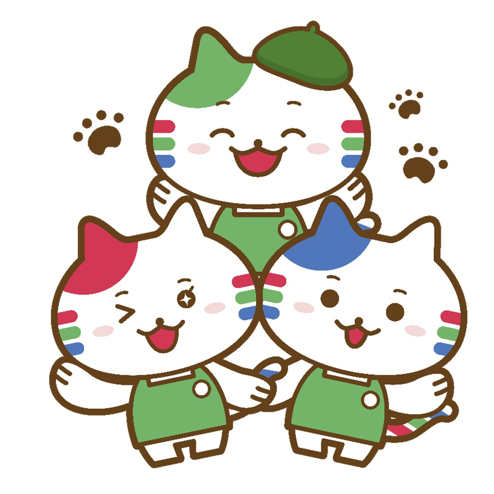

お問い合わせ
ご質問をお選びください

こんにちは！お問い合わせいただきありがとうございます。
下記のカテゴリーから該当するものをお選びいただき、ご質問をクリックしてください。
ネットオーダー
マイフレッセイ
アプリその他
チャットをクリア
ネットオーダー会員登録をするメリットは？
アプリを入れただけで注文ができますか？
ネットオーダー会員登録をするには
ポイントカード番号入力ができません
ポイントカード番号を入力するメリットは？
メールが届きません
あとからポイントカード番号を入力するにはどうしたらいいですか？
ログインできません
メールアドレスを変更したい（登録したアドレスとパスワードを覚えている場合）
パスワードを忘れた
登録したメールアドレスが分からなくなった
電話番号、住所、名前を変更したい
間違えてカートに商品を入れてしまった
注文数を変更したい（注文確定前）
注文をした商品の受け取り日時を変更する
（注文確定後かつ予約締切前）
注文をした商品の受け取り日時を変更する
（予約締切後・または当日）
注文をした商品をキャンセルする
（予約締切前）
注文をした商品をキャンセルする
（予約締切後・または当日）
キャンセルの取り消しはできますか？
注文できているか確認したい
ここの中に聞きたい質問がない・解決しなかった
MyFRESSAY会員登録をするメリットは？
アプリを入れたのにポイントの履歴が確認できません
ポイント履歴はどこで見られますか
MyFRESSAY登録しましたが『ポイント履歴がありません』と表示されます
MyFRESSAYの利用登録ができない
メールが届かない
会員登録完了URLがクリックできない
ログインできません
登録したメールアドレスが分からなくなった
メールアドレスの変更をしたい（登録したアドレスとパスワードは覚えている）
ポイントを保有しているのに現在ポイントが０ポイント表示になっています。またポイント履歴の表示もありません。ポイントが消えてしまったのでしょうか？
ポイント履歴ページで、マイナス表記があります。これは何ですか？
My FRESSAY内で貯めたポイント（アンケートやネット通販のポイント）が加算されてません
マイ・グリーンスタンプ内で貯めたポイントは、MyFRESSAYのポイントに合算できますか？
商品交換の方法、流れを教えてください。
交換商品申込からどのくらいで商品が届きますか？
欲しい商品があるのですが、ポイント券が足りません。
受け取った商品が壊れていました。
ここの中に聞きたい質問がない・解決しなかった
機種変更をする場合
ポイントカード番号が分からなくなりました
ポイントカードの登録情報を変えたい
ポイントカードの登録情報を知りたい
通知がきて困ります
バーコードが出ない
買い物メモが使えません【iPhone】（リストにチェックを入れた商品を消そうとすると、画面が全て消えてホーム画面に戻る）
来店クーポンが消えた
ポイント券はいつもらえますか？
カードを忘れてしまった場合ポイントはもらえますか？
ここの中に聞きたい質問がない・解決しなかった